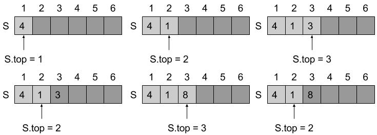
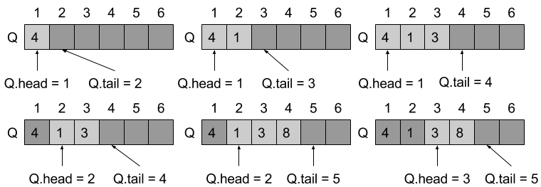

10.1 Stacks and queues
10.1-1

10.1-2
The first stack S1 starts at the first index, when pushing element into S1, we let S1.top += 1, and the second stack S2 starts at the last index, when pushing element into S2, we let S2.top -= 1, when S1.top > S2.top, it overflows.
10.1-3

10.1-4
Initially, we let Q.head = 0 and Q.tail = 1.
ENQUEUE(Q, x)
if Q.head == Q.tail
error "overflow"
Q[Q.tail] = x
if Q.tail == Q.length
Q.tail = 1
else
Q.tail = Q.tail + 1
if Q.head == 0
Q.head = 1
DEQUEUE(Q)
if Q.head == 0
error "underflow"
x = Q[Q.head]
if Q.head = Q.length
Q.head = 1
else Q.head = Q.head + 1
if Q.head == Q.tail
Q.head = 0
Q.tail = 1
return x
10.1-5
IS-EMPTY(DQ)
return DQ.left == 0 and DQ.right == DQ.size
IS-FULL(DQ)
return DQ.right - DQ.left == 1
APPEND(DQ, x)
if IS-FULL(DQ)
error "overflow"
DQ.right = DQ.right - 1
if DQ.right == 0
DQ.right = DQ.size
DQ[DQ.right] = x
POP(DQ)
if IS-EMPTY(DQ)
error "underflow"
if DQ.right == DQ.size + 1
DQ.right = 1
x = DQ[DQ.right]
if DQ.left == DQ.right
DQ.left = 0
DQ.right = DQ.size + 1
else
DQ.right = (DQ.right + 1) % DQ.size
return x
APPEND-LEFT(DQ, x)
if IS-FULL(DQ)
error "overflow"
DQ.left = DQ.left + 1
if DQ.left == DQ.size + 1
DQ.left = 1
DQ[DQ.left] = x
SHIFT(DQ)
if IS-EMPTY(DQ)
error "underflow"
if DQ.left == 0
DQ.left = DQ.size
x = DQ[DQ.left]
if DQ.left == DQ.right
DQ.left = 0
DQ.right = DQ.size + 1
else
DQ.left = DQ.left - 1
if DQ.left == 0
DQ.left = DQ.size
return x
10.1-6
ENQUEUE(Q, x)
if stack-a.count + stack-b.count == n
error "overflow"
stack-a.push(x)
DEQUEUE(Q)
if stack-a.count == 0 and stack-b.count == 0
error "underflow"
if stack-b.count == 0
while stack-a.count != 0
stack-b.push(stack-a.pop())
return stack-b.pop()
We create two stacks stack-a and stack-b, the ENQUEUE operation push x to stack-a, the DEQUEUE operation checks if stack-b is empty first, if it's empty, then pop every elements from stack-a, and push them to stack-b. Then call pop on stack-b.
The running time of ENQUEUE is O(1), but the running time of DEQUEUE is O(n).
10.1-7
PUSH(S, x)
if queue.count == n
error "overflow"
queue.enqueue(x)
POP(S)
if queue.count == 0
error "underflow"
while not queue.count == 0
x = queue.dequeue()
if not queue.count == 0
queue-auxiliary.enqueue(x)
exchange queue with queue-auxiliary
return x
We create two queues queue and queue-auxiliary, the PUSH operation insert x to queue, and the POP operation moves all elements except the last one into queue-auxiliary, and exchange queue with queue-auxiliary, then return x.
The running time of PUSH is O(1), but the running time of POP is O(n).